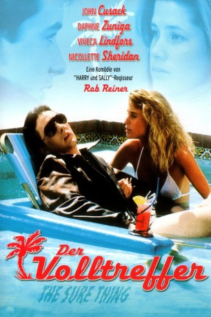
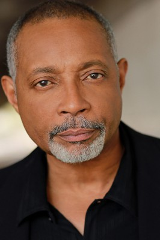

#6270 Der Volltreffer
Alternativ: The Sure Thing
 
 IMDB-Wertung: 7.0 / 10
IMDB-Wertung: 7.0 / 10  Metascore: 0
Metascore: 0 
In dieser Komödie will Gibson nochmal richtig Spaß haben bevor sein neues Semester am College wieder beginnt. In Kalifornien möchte er einen alten Freund treffen, der ihm vorort eine Traumfrau versprochen hat. Was Gibson nicht ahnen kann, ist dass sich die Fahrt gen Westen durch die zufällige Begleitung einer anfangs prüden Mitschülerin in eine abenteuerliche Odysee verwandelt.
Jahr: 1985
Dauer: 91 Minuten
FSK: 12
Land: USA Studio: Embassy PicturesTonspuren: DD2.0 - ,
Untertitel:
Auflösung: 1080p (1920x1080) Größe: 5713 MB
Genre: Drama, Komödie, Liebe
Regisseur:  Rob Reiner
Rob Reiner
Drehbuch: Nikolai Müllerschön
Soundtrack:
Darsteller:
 John Cusack als Walter 'Gib' Gibson
John Cusack als Walter 'Gib' Gibson- Daphne Zuniga als Alison Bradbury
 Anthony Edwards als Lance
Anthony Edwards als Lance- Boyd Gaines als Jason
 Tim Robbins als Gary Cooper
Tim Robbins als Gary Cooper- Lisa Jane Persky als Mary Ann Webster
 Viveca Lindfors als Professor Taub
Viveca Lindfors als Professor Taub- Nicollette Sheridan als The Sure Thing
- Sarah Buxton als Sharon
 John Putch als Mastin
John Putch als Mastin- Steve Pink als Football Player
 Tracy Reiner als Alison's Friend
Tracy Reiner als Alison's Friend-  Frantz Turner als Cop
 Carmen Filpi als Bus Station Bum
Carmen Filpi als Bus Station Bum Fran Ryan als Lady in Car
Fran Ryan als Lady in Car Larry Hankin als Trucker
Larry Hankin als Trucker- Julie Ow als Girl in Sarong
- Joy Michelle Moore als Hot Party Girl , uncredited
 John Richard Petersen als Frat Guy on Stairs , uncredited
John Richard Petersen als Frat Guy on Stairs , uncredited Chris Tashima als Frat Guy at Punch Bowl , uncredited
Chris Tashima als Frat Guy at Punch Bowl , uncredited- Fel Tengonciang als Classroom Student , uncredited
- Marcia Christie als Julie
- Robert Anthony Marcucci als Bobby
- Lorrie Lightle als Lucy
- Joshua Cadman als Jimbo
- Krystal Richards als Girl in Photo
- Martin J. Layton als Frat Guy
- Amy Resnick als Marsha
- Robert Bauer als Moke
- Garry Goodrow als Pick-Up Driver
- Robert Snively als Bus Station Clerk
 Richard Hamilton als Bartender
Richard Hamilton als Bartender- George Memmoli als Man in Bar
- Stephanie Blake als Barmaid
- Sunshine Parker als Cowboy Guy
- Teresa Baxter als Rose Lady
- Jimmy Baron als Guy at Frat Party
- Noelle Williams als Katherine
- Tamara Carrera als Fantasy Girl , uncredited
- David Connella als Student , uncredited
- Helen Kelly als Bar Girl , uncredited
- Christopher Rydell als Charlie , uncredited
Datei: X:\1985\Volltreffer, Der (1985, FSK12, 1920x1080).mkv seit 24.05.2017
Festplatte: HD 1980-1986
 Es gibt insgesamt 43 Filme in der Gruppe '1985'
Es gibt insgesamt 43 Filme in der Gruppe '1985'